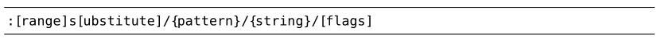

，你可以找到完整的列表，下表只是总结了其中的一部分常用符号：
，你可以找到完整的列表，下表只是总结了其中的一部分常用符号：技巧87结识substitute命令
:substitute命令很复杂，除了要提供查找的模式以及替换字符串外，还要指定执行的范围。另外，作为可选项，我们还可以通过标志位来调整该命令的行为。
substitute命令允许我们先查找一段文本，再用另一段文本将其替换掉。命令的语法如下所示：

一条完整的substitute命令由许多部分组成。其中，[range] 的规则对于每一条Ex命令都适用，substitute命令也不例外。关于这一点，我们已在技巧28中进行过深入的讨论。至于 {pattern} 的用法，也已在第12章中有所涉及。
利用标志位调整substitute命令的行为
我们可以利用标志位来调整substitute命令的行为。要充分了解substitute标志位的作用，最佳的途径就是在实际应用中对其进行观察。因此，让我们简短地将其他技巧中用到的标志位在此处做一番总结。（关于完整的参考资料，请查询:h s_flags 。）
标志位g使得subsititute命令可在全局范围内执行，即可以修改一行内的所有匹配，而不仅仅是第一处匹配。我们将在技巧88中结识它。
标志位c让我们有机会可以确认或拒绝每一处修改。我们将在技巧89中看到此标志位的应用实例。
标志位n会抑制正常的替换行为，即让Vim不执行替换操作，而只是报告本次substitute 命令匹配的个数。技巧82向我们展示了此标志位的一则实例。
当我们执行 substitute 命令时，如果在当前文件中没有匹配到该模式，Vim会提示错误信息“E486:找不到模式”。正如我们将在技巧96中所看到的那样，标志位e专门用于屏蔽这些错误提示。
标志位&仅仅用于指示Vim重用上一次substitute命令所用过的标志位。技巧92展示了其应用的场景。
替换域中的特殊字符
在第12章中，我们已经发现一些字符在用作查找模式时具有特殊含义。替换域中也有一些特殊字符。通过查询:h sub-replace-special，你可以找到完整的列表，下表只是总结了其中的一部分常用符号：
| 符号 | 描述 |
| \r | 插入一个换行符 |
| \t | 插入一个制表符 |
| \\ | 插入一个反斜杠 |
| \1 | 插入第1个子匹配 |
| \2 | 插入第2个子匹配（以此类推，最多到\9） |
| \0 | 插入匹配模式的所有内容 |
| & | 插入匹配模式的所有内容 |
| ~ | 使用上一次调用:substitute时的{string} |
| \={Vim script} | 执行{Vim Script}表达式；并将返回的结果作为替换{string} |
\r、\t以及 \\ 等符号的意义是不言自明的。在技巧92中，我们不仅会看到 ~ 符号是如何工作的，而且还能学到几种快捷方式，通过它们，我们可以更快地重复substitute命令。此外，我们还将在技巧93中看到\1与\2的应用实例。
\={Vim script}表达式的功能非常强大。它允许我们先执行一段代码，再将其结果作为替换域中的{string}使用。在技巧94与技巧95中，我们将会看到有关它的几个实例。